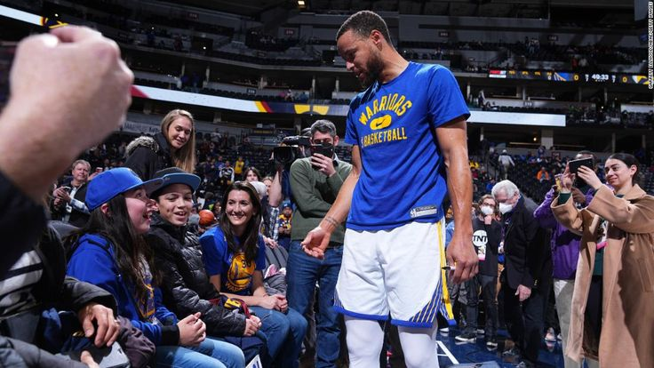

Fan Moments
Stephen Curry's global reach has created unforgettable moments with fans. From signing shoes to viral post-game hugs, he's known for connecting deeply with his supporters (NBA.com).
In 2023, a fan traveled from Japan just to see him warm up. After hearing the story, Curry met him courtside (Sports Illustrated). These small but powerful gestures show why fans feel so close to him.
Do you have a special memory or moment involving Curry? Head to the contact page and share it with us.